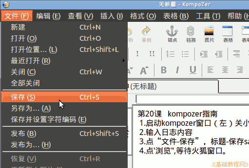
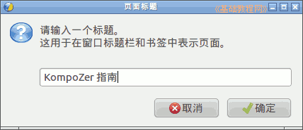
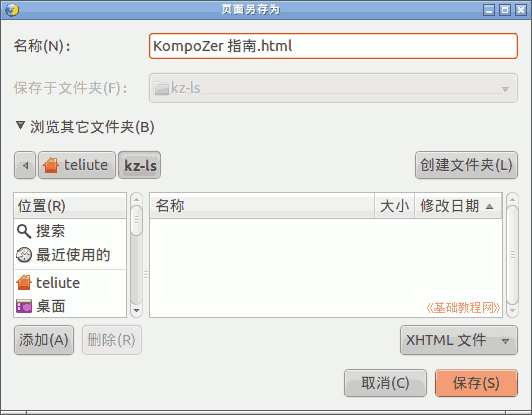
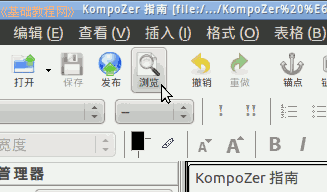
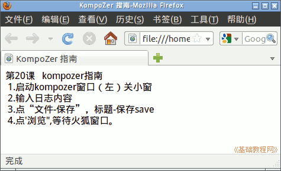

KompoZer 教学课程设计
作者：TeliuTe 来源：基础教程网
二、KompoZer 指南 返回目录 下一课这一课我们学习 Kompozer 中输入内容和保存网页；
1、启动 KompoZer
1）按照上一节课的内容，启动 KompoZer，关闭日积月累小窗口；
2）在窗口中输入黑板上笔记的内容；
3）点菜单“文件－保存”，出来一个标题对话框中，要求输入网页标题；

4）在出来的标题对话框中，输入“标题－确定”后，点“保存”；
 
5）点工具栏上的“浏览”按钮，等待火狐浏览器窗口出来；
 
本节学习了 KompoZer 操作的基础知识，如果你成功地完成了练习，请继续学习下一课内容；
本教程由86团学校TeliuTe制作|著作权所有
基础教程网：http://teliute.org/
美丽的校园……
转载和引用本站内容，请保留版权信息和本站链接。